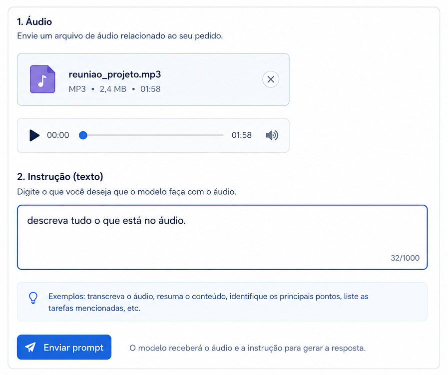
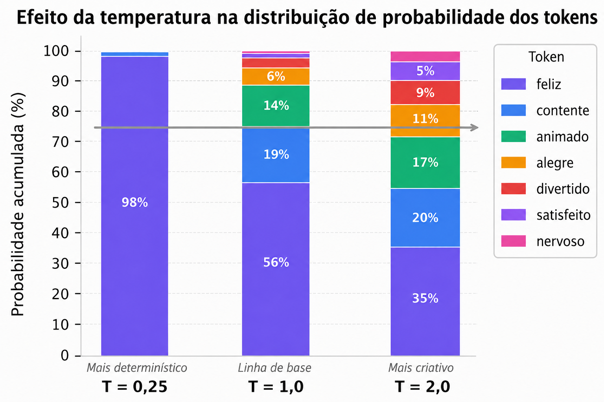
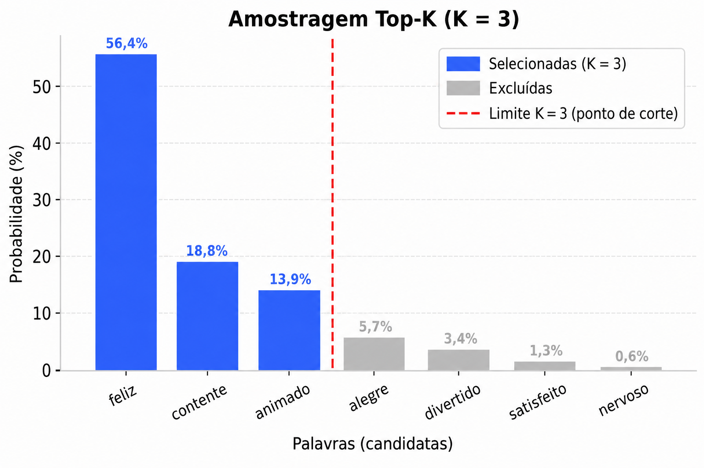
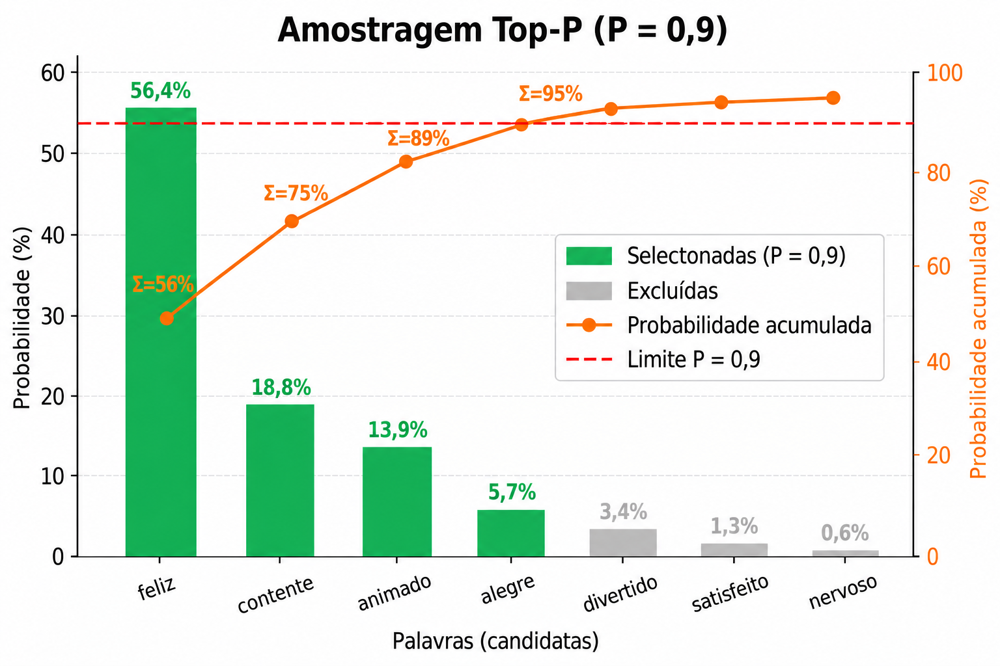
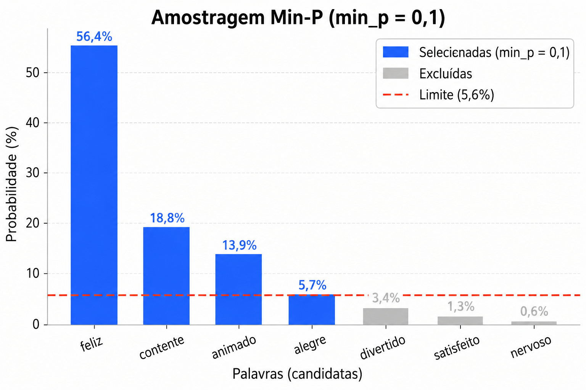

Unidade 1 — Engenharia de Prompt
Disciplina: Aplicações de Modelos de Linguagem Natural
1. Introdução à Engenharia de Prompt
Os grandes modelos de linguagem (LLMs) são amplamente utilizados hoje em aplicações voltadas para consumidores, em sistemas internos de empresas e em contextos de pesquisa. Em geral, esses modelos funcionam a partir de uma entrada fornecida pelo usuário — chamada de prompt — a partir da qual o modelo gera uma saída como resposta. Um prompt pode ser textual, como em "Escreva um poema sobre árvores.", ou assumir outras formas, como imagens, áudio, vídeo, ou uma combinação desses formatos. Por permitir o uso de linguagem natural, o prompting torna esses modelos fáceis de usar e flexíveis o suficiente para se adaptar a uma ampla variedade de aplicações.
Para usar LLMs de forma efetiva, é fundamental saber como estruturar, avaliar e executar tarefas por meio de prompts. Na prática, prompts bem construídos tendem a gerar resultados melhores em diferentes tipos de tarefa. Por esse motivo, cresceu significativamente a quantidade de estudos sobre como usar o prompting para melhorar esses resultados, e o número de técnicas de prompting disponíveis vem aumentando rapidamente.
Apesar desse crescimento, a engenharia de prompt ainda é um campo relativamente novo, e seu uso costuma ser pouco compreendido: grande parte da terminologia e das técnicas existentes ainda não é amplamente conhecida entre os praticantes. Por isso, é importante que quem trabalha com IA Generativa domine, desde o início, os conceitos e o vocabulário fundamentais da área — conteúdo que será apresentado ao longo desta unidade.
2. Conceito de Prompt
Um prompt é definido como "uma entrada para um modelo de IA Generativa, que é usada para guiar sua saída". Os prompts podem consistir em texto, imagem, som ou outros tipos de mídia. Alguns exemplos de prompts incluem:
Exemplo de prompt textual.
uma fotografia de uma mesa acompanhada da instrução:
Exemplo de prompt multimodal (imagem + texto).
ou, ainda, uma gravação de uma reunião on-line acompanhada da instrução:

Exemplo de prompt multimodal (áudio + texto).
Esses exemplos ilustram que o conceito de prompt não está restrito a texto: qualquer entrada — textual ou multimodal — que seja fornecida a um modelo de IA Generativa com o objetivo de guiar a sua saída pode ser considerada um prompt.
3. Modelo de Prompt (Prompt Template)
Prompts são frequentemente construídos por meio de um prompt template (modelo de prompt). Um prompt template é uma função que contém uma ou mais variáveis que serão substituídas por alguma mídia — geralmente texto — para criar um prompt concreto. O prompt resultante da substituição dessas variáveis pode então ser considerado uma instância do template.
Considere a aplicação de prompting à tarefa de classificação binária de tweets:
Prompt template para classificação de sentimento de tweets.
Cada tweet do conjunto de dados seria inserido em uma instância separada do template, e o prompt resultante seria passado para um LLM para inferência. Ou seja, a variável {TWEET} é substituída pelo texto de um tweet específico a cada execução, gerando um novo prompt concreto a partir do mesmo template.
Outro exemplo de prompt template:
Prompt template para geração de poemas a partir de um tema fornecido pelo usuário.
O uso de templates é o que torna os prompts reutilizáveis e programáveis: em vez de escrever manualmente um novo prompt para cada entrada, o template define a estrutura fixa da tarefa, deixando apenas os pontos variáveis — como {TWEET} ou {ENTRADA_DO_USUARIO} — para serem preenchidos dinamicamente.
4. Terminologia
A terminologia de prompting está se desenvolvendo rapidamente, e há muitas definições mal compreendidas e até conflitantes entre si. Esta seção apresenta um vocabulário de termos usados na comunidade de prompting, dividido em duas partes: os componentes que costumam formar um prompt e os termos de instrução — o vocabulário conceitual usado para descrever o próprio processo de prompting.
4.1 Componentes de um Prompt
Há uma variedade de componentes comumente incluídos em um prompt. A seguir, resumem-se os componentes mais utilizados e discute-se como cada um se encaixa na construção de prompts.
Diretiva
Muitos prompts emitem uma diretiva na forma de uma instrução ou pergunta. Esta é a intenção central do prompt. Por exemplo:
Diretiva explícita, formulada como instrução direta.
Diretivas também podem ser implícitas, como neste caso one-shot, em que a diretiva é executar uma tradução do português para o espanhol, sem que isso seja dito explicitamente:
Diretiva implícita: a tarefa de tradução é inferida a partir do exemplo dado.
Exemplos
Exemplos atuam como demonstrações que guiam a IA Generativa a realizar uma tarefa. O prompt apresentado logo acima (Noite: Noche / Manhã:) é um exemplo de prompt One-Shot, ou seja, um prompt que contém exatamente um exemplo.
Formatação da Saída
Muitas vezes é desejável que a IA Generativa produza informações em certos formatos, por exemplo, arquivos CSV ou texto em formato Markdown. Para facilitar isso, basta adicionar instruções específicas para tanto, como no exemplo abaixo:
Instrução de formatação de saída: solicitação para resumir um parágrafo em formato CSV.
Instruções de Estilo
Instruções de estilo são um tipo de formatação de saída usado para modificar a saída estilisticamente, em vez de estruturalmente. Por exemplo:
Instrução de estilo: solicita um texto "claro e conciso" sobre lhamas.
Papel / Persona
Uma Role, também conhecida como persona, é um componente frequentemente discutido que pode melhorar a escrita e o texto produzido em determinado estilo. Por exemplo:
Atribuição de papel/persona: o modelo é instruído a "fingir" ser um pastor de ovelhas.
Informações Adicionais
Muitas vezes é necessário incluir informações adicionais no prompt. Por exemplo, se a diretiva for escrever um e-mail, pode-se incluir informações como o nome e o cargo do remetente, de modo que a IA Generativa consiga assinar adequadamente o e-mail em nome dessa pessoa.
4.2 Termos de Instrução
Além dos componentes que compõem um prompt, é importante conhecer o vocabulário usado para descrever o processo de prompting como um todo. Esses termos são chamados de termos de instrução (Prompting Terms) e ajudam a explicar como os prompts são criados, encadeados e aprimorados.
Prompting
Prompting é o ato de fornecer um prompt a uma IA Generativa para que ela gere uma resposta. Por exemplo, enviar um texto ou carregar uma imagem para o modelo já caracteriza um prompting.
Prompt Chain
Uma prompt chain é uma sequência de dois ou mais prompt templates usados um após o outro; o processo de criar essa sequência é chamado de prompt chaining. Nela, a saída gerada pelo primeiro template é usada para preencher o template seguinte, e assim por diante, até que todos os templates da cadeia tenham sido utilizados.
Prompt Engineering
Prompt engineering é o processo iterativo de aprimorar um prompt: a cada iteração, modifica-se ou substitui-se a técnica de prompting usada, buscando melhorar os resultados obtidos.
Prompting Technique
Uma prompting technique é um modelo que define como estruturar um prompt — ou como organizar dinamicamente uma sequência de vários prompts. Ela pode envolver lógica condicional, execução em paralelo ou outros mecanismos que coordenam múltiplos prompts entre si.
5. Por que a Engenharia de Prompt é importante
Modelos de linguagem já demonstram capacidades notáveis em tarefas como geração de conteúdo, apoio à tomada de decisão e até descoberta científica. Ainda assim, o desempenho desses modelos é bastante sensível à forma como são instruídos: o mesmo modelo pode produzir resultados muito melhores ou muito piores dependendo de como o prompt é escrito.
Quando a engenharia de prompt é praticada de forma pouco cuidadosa, isso pode levar a saídas inconsistentes, alucinações (respostas incorretas apresentadas com aparência de certeza) e resultados que não se repetem bem entre tarefas diferentes. Por isso, dominar essa prática é essencial para quem trabalha com IA Generativa.
Em vez de prompts vagos ou genéricos, prompts bem estruturados e ricos em contexto ajudam o modelo a gerar respostas mais precisas, relevantes e detalhadas. Esse processo envolve refinar a redação do prompt, adicionar restrições — como um limite de palavras — e especificar o formato ou o estilo desejado para a resposta. O exemplo a seguir ilustra essa diferença:
Prompt básico: tende a gerar uma resposta genérica, vaga e pouco clara.
Prompt elaborado por engenharia de prompt: tende a gerar uma resposta detalhada, estruturada e relevante.
Por esse motivo, a engenharia de prompt é amplamente aplicada em sistemas como chatbots, ferramentas de geração de conteúdo e sistemas de apoio à decisão, ajudando a reduzir ambiguidades e a alinhar melhor as respostas do modelo com a intenção de quem o utiliza.
As técnicas de prompting costumam ser organizadas em dois grandes grupos. De um lado, estão as abordagens fundamentais, como o zero-shot prompting — quando o modelo recebe apenas a instrução da tarefa, sem nenhum exemplo — e o few-shot prompting — quando alguns exemplos da tarefa são incluídos no próprio prompt para guiá-lo. De outro, estão estratégias mais avançadas, como o raciocínio em cadeia (chain-of-thought reasoning), a geração aumentada por recuperação (retrieval-augmented generation, ou RAG), mecanismos de autoconsistência (self-consistency) e frameworks que combinam raciocínio e ação, como o ReAct, que intercalam etapas de raciocínio com o uso de ferramentas externas para resolver a tarefa. Essas técnicas serão estudadas em detalhe na Unidade 2 desta disciplina.
6. Configuração da Saída do LLM
A maioria dos LLMs oferece diversas opções que controlam a saída gerada. Uma engenharia de prompt eficaz exige ajustar essas configurações de forma adequada à tarefa que se quer resolver.
Tamanho da saída
Uma configuração importante é o número de tokens a serem gerados na resposta. Gerar mais tokens exige mais computação do modelo, o que leva a maior consumo de energia, tempos de resposta potencialmente mais lentos e custos mais altos.
Reduzir o tamanho da saída não torna o LLM mais conciso em termos de estilo ou de conteúdo — apenas faz com que ele pare de prever novos tokens assim que o limite é atingido. Se a tarefa exige uma resposta curta, também é necessário elaborar o prompt para que ele produza esse tipo de resposta.
A restrição do tamanho da saída é especialmente importante em algumas técnicas de prompting, como o ReAct, em que o modelo tende a continuar emitindo tokens desnecessários depois de já ter gerado a resposta desejada.
Controles de amostragem
Os LLMs não preveem, a rigor, um único token diretamente. Em vez disso, eles calculam uma probabilidade para cada token possível do seu vocabulário, e essas probabilidades são então amostradas para determinar qual será o próximo token produzido. Temperatura, top-K e top-P são as configurações mais comuns usadas para processar essas probabilidades e escolher um único token de saída.
Temperatura
A temperatura controla o grau de aleatoriedade na seleção do token. Temperaturas mais baixas são adequadas para prompts que esperam uma resposta mais determinística, enquanto temperaturas mais altas tendem a gerar resultados mais diversos ou inesperados. Uma temperatura igual a 0 (chamada de greedy decoding, ou decodificação gulosa) é determinística: o token de maior probabilidade é sempre selecionado — embora, se dois tokens tiverem exatamente a mesma probabilidade mais alta, a forma como esse empate é resolvido possa fazer com que nem sempre se obtenha a mesma saída, mesmo com temperatura 0.
Temperaturas próximas do valor máximo tendem a gerar saídas mais aleatórias. E, à medida que a temperatura aumenta, todos os tokens tendem a se tornar igualmente prováveis de serem escolhidos como o próximo token.
Vamos observar o efeito da Temperatura (T) no exemplo da Figura 1. Observe que, com um valor T mais alto (T > 1), palavras como "nervoso" têm uma probabilidade consideravelmente maior de serem escolhidas, enquanto "feliz" se torna menos dominante. Com um valor T mais baixo (T < 1), a escolha de "feliz" é quase garantida, enquanto as outras são efetivamente ignoradas. Note que 75% da probabilidade corresponde a uma palavra em T=0,25, duas palavras em T=1 e quatro palavras em T=2.

Top-K, Top-P e Min-P
Top-K e top-P (também chamado de nucleus sampling, ou amostragem por núcleo) são duas configurações usadas em LLMs para restringir a escolha do próximo token a um subconjunto dos tokens com maior probabilidade prevista. Assim como a temperatura, essas configurações controlam a aleatoriedade e a diversidade do texto gerado.
A amostragem top-K seleciona os K tokens mais prováveis da distribuição prevista pelo modelo. Quanto maior o valor de top-K, mais criativa e variada tende a ser a saída do modelo; quanto menor o valor, mais restrita e factual ela tende a ser. Um top-K igual a 1 equivale à decodificação gulosa. Observe o exemplo da Figura 2 com K=3, os quatro tokens de menor probabilidade são descartados completamente e o modelo seleciona amostras apenas de “feliz”, “contente” e “animado”.

A amostragem top-P seleciona os tokens de maior probabilidade cuja soma acumulada não ultrapasse um determinado valor (P). Os valores de P variam de 0 (decodificação gulosa) a 1 (todos os tokens do vocabulário do modelo). No exemplo da Figura 3, o modelo começa com "feliz" (56,4%), depois adiciona "contente" (18,8%), totalizando 75,2%, e em seguida "animado" (13,9%), chegando a 89,1%. Adicionando "alegre" (5,7%), o total chega a 94,7%, o que atinge o limite de 90% – portanto, o processo termina aí. Como são necessários 4 tokens para atingir o limite, esses são os que são mantidos.

A amostragem min-P seleciona os tokens cuja probabilidade não fique abaixo de uma fração da probabilidade do token mais provável, definida pelo parâmetro P. Por exemplo (Figura 4), se o token mais provável tiver 56,4% de probabilidade e P for 0,1, o limiar de corte fica em 5,64%. Diferente do top-P, esse limiar se ajusta dinamicamente à confiança do modelo, o que costuma evitar a inclusão de tokens irrelevantes quando a distribuição de probabilidades está mais achatada.

A melhor forma de escolher entre top-K, top-P e min-P é experimentar os métodos — separadamente ou combinados — e observar qual deles produz os resultados desejados.
Juntando tudo
Na prática, temperatura, top-K e top-P raramente são usados isoladamente: é a combinação entre eles que determina o comportamento final do modelo. Uma temperatura alta usada sozinha, por exemplo, pode permitir que tokens muito improváveis apareçam na saída, produzindo um texto sem sentido. Já quando essa mesma temperatura alta é combinada com uma filtragem por top-P, é possível obter variedade criativa sem o risco de o texto se desconectar completamente do que faz sentido.
A ordem em que esses filtros são aplicados também importa — existe mais de uma forma de organizar esse processo, chamado de pipeline de amostragem. No fluxo mais comum, a temperatura é aplicada primeiro, reescalando a distribuição de probabilidades dos tokens; em seguida, aplica-se a filtragem por top-K ou por top-P sobre essa distribuição já reescalada; por fim, o próximo token é escolhido por amostragem aleatória dentro do conjunto de tokens que restou. Essa abordagem em camadas permite ajustar, de forma bastante controlada, o equilíbrio entre coerência e criatividade da saída.
Existe também um fluxo alternativo, adotado por exemplo pelo llama.cpp: nele, a filtragem por top-K/top-P ocorre primeiro, ainda sobre a distribuição de probabilidades original — sem a influência da temperatura —, e só depois a temperatura é aplicada sobre o conjunto de tokens já filtrado. Como a ordem das operações é diferente, esse pipeline pode produzir resultados bastante distintos do primeiro, mesmo usando exatamente os mesmos valores de temperatura, top-K e top-P.
Com base nisso, é possível chegar a algumas recomendações práticas, de acordo com o tipo de tarefa:
- Para tarefas factuais ou determinísticas — como resumir um texto, gerar código ou responder perguntas —, costuma funcionar melhor usar uma temperatura baixa combinada com um top-P alto. Isso mantém o foco nas respostas mais prováveis, mas ainda preserva uma escrita natural, evitando um texto excessivamente repetitivo ou mecânico.
- Para tarefas criativas — como brainstorming, redação de narrativas ou textos publicitários —, costuma funcionar melhor usar uma temperatura alta combinada com um top-P mais baixo. Isso permite que o modelo escolha palavras mais inesperadas, mas ainda descarta as opções realmente improváveis, evitando que o texto perca completamente o sentido.
Em resumo: combinar uma temperatura baixa com um top-P generoso ajuda a evitar repetições mecânicas sem perder precisão; a combinação oposta — temperatura alta com um top-P mais restrito — abre espaço para respostas mais criativas, mas dentro de limites razoáveis. Vale destacar que essas são diretrizes gerais, não regras fixas: os melhores valores de temperatura, top-K e top-P (assim como do min-P, um parâmetro mais recente que impõe um limiar mínimo de probabilidade para um token ser considerado) sempre dependem do contexto específico de uso e costumam exigir ajuste experimental para cada tarefa.
7. Referências
- BOONSTRA, L. Prompt Engineering. [S. l.]: Google, fev. 2025. (Whitepaper). Disponível em: https://www.kaggle.com/whitepaper-prompt-engineering. Acesso em: 20 ago. 2026.
- DEBNATH, T.; SIDDIKY, M. N. A.; RAHMAN, M. E.; DAS, P.; GUHA, A. K.; RAHMAN, M. R.; KABIR, H. M. D. A comprehensive survey of prompt engineering and context engineering techniques in large language models. Computer Science Review, v. 62, art. 100979, 2026. DOI: 10.1016/j.cosrev.2026.100979. Disponível em: https://www.sciencedirect.com/science/article/pii/S1574013726000870. Acesso em: 17 ago. 2026.
- MUSE, K. How Temperature, Top-K, Top-P, and Min-P Control LLM Output. Ken Muse (blog), 3 abr. 2026. Disponível em: https://www.kenmuse.com/blog/how-temp-topk-topp-minp-control-llm-output/. Acesso em: 20 ago. 2026.
- SCHULHOFF, S.; ILIE, M.; BALEPUR, N.; KAHADZE, K.; LIU, A.; SI, C.; LI, Y.; GUPTA, A.; HAN, H.; SCHULHOFF, S.; DULEPET, P. S.; VIDYADHARA, S.; KI, D.; AGRAWAL, S.; PHAM, C.; KROIZ, G.; LI, F.; TAO, H.; SRIVASTAVA, A.; DA COSTA, H.; GUPTA, S.; ROGERS, M. L.; GONCEARENCO, I.; SARLI, G.; GALYNKER, I.; PESKOFF, D.; CARPUAT, M.; WHITE, J.; ANADKAT, S.; HOYLE, A.; RESNIK, P. The Prompt Report: A Systematic Survey of Prompt Engineering Techniques. arXiv preprint arXiv:2406.06608, 2024. Disponível em: https://arxiv.org/html/2406.06608v1. Acesso em: 17 ago. 2026.